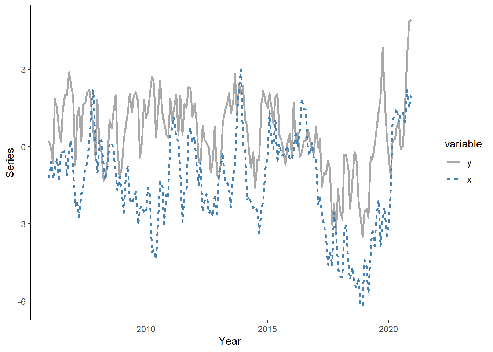

Tutorial 6: Linear Autoregression
(this is a VAR stuff, will need to move back)
In this tutorial, we will generate bivariate series, we will apply a system-wide information criterion to select a suitable vector autoregressive model, we will perform an in-sample test of Granger causality, we will obtain and compare one-step-ahead forecasts from competing models using a rolling window procedure, and in so doing we will investigate the evidence of Granger causality in an out-of-sample setting. To run the code, the data.table and MASS packages need to be installed and loaded.
Let’s generate a two-dimensional vector of time series that follow a VAR(1) process of the following form: \[\begin{aligned} x_{1,t} &= 0.3 + 0.7x_{1,t-1} + 0.1x_{2,t-1} + \varepsilon_{1,t} \\ x_{2,t} &= -0.2 + 0.9x_{1,t-1} + \varepsilon_{2,t} \end{aligned}\] where \(\mathbf{e}_{t} \sim N(\mathbf{0},\Sigma)\), and where \(\Sigma\) is the covariance matrix of the residuals such that \(Cov(\varepsilon_{1,t},\varepsilon_{2,t}) = 0.3\) for all \(t=1,\ldots,180\). (Note: in the code, \(x_1\) is denoted by \(y\) and \(x_2\) is denoted by \(x\)).
n <- 180
R <- matrix(c(1,0.3,0.3,1),nrow=2,ncol=2)
set.seed(1)
e <- mvrnorm(n,mu=c(0,0),Sigma=R)
e_y <- e[,1]
e_x <- e[,2]
y <- rep(NA,n)
x <- rep(NA,n)
y[1] <- e_y[1]
x[1] <- e_x[1]
for(i in 2:n){
y[i] <- 0.3+0.7*y[i-1]+0.1*x[i-1]+e_y[i]
x[i] <- -0.2+0.9*x[i-1]+e_x[i]
}Generate a vector of some arbitrary dates (e.g., suppose we deal with the monthly series beginning from January 2006), and store these along with \(y\) in a data.table, call it ‘dt.’
date <- seq(as.Date("2006-01-01"),by="month",along.with=y)
dt <- data.table(date,y,x)Plot the realized time series using ggplot function.
dt_long <- melt(dt,id.vars="date")
ggplot(dt_long,aes(x=date,y=value,color=variable,linetype=variable))+
geom_line(size=1)+
scale_color_manual(values=c("darkgray","steelblue"))+
labs(x="Year",y="Series")+
theme_classic()
Estimate VAR(1) and VAR(2) by running regressions on each equation separately. Collect residuals and obtain system-wide AIC for each of the two models.
dt[,`:=`(y_l1=shift(y,1),y_l2=shift(y,2),x_l1=shift(x,1),x_l2=shift(x,2))]
# VAR(1)
p <- 1
k <- 2
var1y <- lm(y~y_l1+x_l1,data=dt)
var1x <- lm(x~y_l1+x_l1,data=dt)
var1r <- cbind(var1y$residuals,var1x$residuals)
cov1r <- crossprod(var1r)/(nrow(dt)-(p*k^2+k))
AIC1 <- log(det(cov1r))+2*(p*k^2+k)/nrow(dt)
# VAR(2)
p <- 2
k <- 2
var2y <- lm(y~y_l1+y_l2+x_l1+x_l2,data=dt)
var2x <- lm(x~y_l1+y_l2+x_l1+x_l2,data=dt)
var2r <- cbind(var2y$residuals,var2x$residuals)
cov2r <- crossprod(var2r)/(nrow(dt)-(p*k^2+k))
AIC2 <- log(det(cov2r))+2*(p*k^2+k)/nrow(dt)
AIC1## [1] -0.1270596AIC2## [1] -0.047212Perfrom tests of (in-sample) Granger causality in each of the two models. Note, in the case of VAR(1), both t tests and F tests are applicable and they both provide identical inference. In the case of VAR(p), where \(p>1\), the only appropriate test is an F test for joint significance of the parameters associated with the lags of the potentially causal variable.
# VAR(1)
## t test
summary(var1y)##
## Call:
## lm(formula = y ~ y_l1 + x_l1, data = dt)
##
## Residuals:
## Min 1Q Median 3Q Max
## -2.32279 -0.63680 -0.00953 0.68826 2.63468
##
## Coefficients:
## Estimate Std. Error t value Pr(>|t|)
## (Intercept) 0.34926 0.11146 3.134 0.00202 **
## y_l1 0.68903 0.05877 11.725 < 2e-16 ***
## x_l1 0.11304 0.04509 2.507 0.01308 *
## ---
## Signif. codes: 0 '***' 0.001 '**' 0.01 '*' 0.05 '.' 0.1 ' ' 1
##
## Residual standard error: 0.976 on 176 degrees of freedom
## (1 observation deleted due to missingness)
## Multiple R-squared: 0.5689, Adjusted R-squared: 0.564
## F-statistic: 116.1 on 2 and 176 DF, p-value: < 2.2e-16summary(var1x)##
## Call:
## lm(formula = x ~ y_l1 + x_l1, data = dt)
##
## Residuals:
## Min 1Q Median 3Q Max
## -2.38491 -0.68087 0.03216 0.66109 2.74762
##
## Coefficients:
## Estimate Std. Error t value Pr(>|t|)
## (Intercept) -0.22353 0.10805 -2.069 0.040 *
## y_l1 0.05814 0.05697 1.021 0.309
## x_l1 0.85285 0.04371 19.511 <2e-16 ***
## ---
## Signif. codes: 0 '***' 0.001 '**' 0.01 '*' 0.05 '.' 0.1 ' ' 1
##
## Residual standard error: 0.9461 on 176 degrees of freedom
## (1 observation deleted due to missingness)
## Multiple R-squared: 0.7536, Adjusted R-squared: 0.7508
## F-statistic: 269.2 on 2 and 176 DF, p-value: < 2.2e-16## F test
ar1y <- lm(y~y_l1,data=dt)
ar1x <- lm(x~x_l1,data=dt)
anova(var1y,ar1y)## Analysis of Variance Table
##
## Model 1: y ~ y_l1 + x_l1
## Model 2: y ~ y_l1
## Res.Df RSS Df Sum of Sq F Pr(>F)
## 1 176 167.64
## 2 177 173.62 -1 -5.9866 6.2852 0.01308 *
## ---
## Signif. codes: 0 '***' 0.001 '**' 0.01 '*' 0.05 '.' 0.1 ' ' 1anova(var1x,ar1x)## Analysis of Variance Table
##
## Model 1: x ~ y_l1 + x_l1
## Model 2: x ~ x_l1
## Res.Df RSS Df Sum of Sq F Pr(>F)
## 1 176 157.54
## 2 177 158.47 -1 -0.93231 1.0416 0.3089## VAR(2)
### t test (no longer applicable to test GC)
summary(var2y)##
## Call:
## lm(formula = y ~ y_l1 + y_l2 + x_l1 + x_l2, data = dt)
##
## Residuals:
## Min 1Q Median 3Q Max
## -2.38088 -0.71387 -0.01504 0.72538 2.70511
##
## Coefficients:
## Estimate Std. Error t value Pr(>|t|)
## (Intercept) 0.32203 0.11775 2.735 0.00689 **
## y_l1 0.65954 0.07822 8.431 1.3e-14 ***
## y_l2 0.04964 0.07965 0.623 0.53397
## x_l1 0.15919 0.08052 1.977 0.04962 *
## x_l2 -0.05991 0.08104 -0.739 0.46080
## ---
## Signif. codes: 0 '***' 0.001 '**' 0.01 '*' 0.05 '.' 0.1 ' ' 1
##
## Residual standard error: 0.9816 on 173 degrees of freedom
## (2 observations deleted due to missingness)
## Multiple R-squared: 0.5709, Adjusted R-squared: 0.561
## F-statistic: 57.55 on 4 and 173 DF, p-value: < 2.2e-16summary(var2x)##
## Call:
## lm(formula = x ~ y_l1 + y_l2 + x_l1 + x_l2, data = dt)
##
## Residuals:
## Min 1Q Median 3Q Max
## -2.37790 -0.64364 0.05401 0.67542 2.71827
##
## Coefficients:
## Estimate Std. Error t value Pr(>|t|)
## (Intercept) -0.24577 0.11419 -2.152 0.0328 *
## y_l1 0.03070 0.07586 0.405 0.6862
## y_l2 0.04486 0.07724 0.581 0.5621
## x_l1 0.86196 0.07809 11.039 <2e-16 ***
## x_l2 -0.01627 0.07859 -0.207 0.8362
## ---
## Signif. codes: 0 '***' 0.001 '**' 0.01 '*' 0.05 '.' 0.1 ' ' 1
##
## Residual standard error: 0.9519 on 173 degrees of freedom
## (2 observations deleted due to missingness)
## Multiple R-squared: 0.7546, Adjusted R-squared: 0.7489
## F-statistic: 133 on 4 and 173 DF, p-value: < 2.2e-16### F test
ar2y <- lm(y~y_l1+y_l2,data=dt)
ar2x <- lm(x~x_l1+x_l2,data=dt)
anova(var2y,ar2y)## Analysis of Variance Table
##
## Model 1: y ~ y_l1 + y_l2 + x_l1 + x_l2
## Model 2: y ~ y_l1 + y_l2
## Res.Df RSS Df Sum of Sq F Pr(>F)
## 1 173 166.68
## 2 175 172.78 -2 -6.0971 3.1641 0.04471 *
## ---
## Signif. codes: 0 '***' 0.001 '**' 0.01 '*' 0.05 '.' 0.1 ' ' 1anova(var2x,ar2x)## Analysis of Variance Table
##
## Model 1: x ~ y_l1 + y_l2 + x_l1 + x_l2
## Model 2: x ~ x_l1 + x_l2
## Res.Df RSS Df Sum of Sq F Pr(>F)
## 1 173 156.76
## 2 175 158.03 -2 -1.2729 0.7024 0.4968Generate a sequence of one-step-ahead forecasts from VAR(1) using the rolling window scheme, where the first rolling window ranges from period 1 to period 120.
R <- 120
P <- nrow(dt)-R
dt$ar1y <- NA
dt$ar1x <- NA
dt$var1y <- NA
dt$var1x <- NA
for(i in 1:P){
ar1y <- lm(y~y_l1,data=dt[i:(R-1+i)])
ar1x <- lm(x~x_l1,data=dt[i:(R-1+i)])
var1y <- lm(y~y_l1+x_l1,data=dt[i:(R-1+i)])
var1x <- lm(x~y_l1+x_l1,data=dt[i:(R-1+i)])
dt$ar1y[R+i] <- ar1y$coefficients[1]+ar1y$coefficients[2]*dt$y[R-1+i]
dt$ar1x[R+i] <- ar1x$coefficients[1]+ar1x$coefficients[2]*dt$x[R-1+i]
dt$var1y[R+i] <- var1y$coefficients[1]+var1y$coefficients[2]*dt$y[R-1+i]+var1y$coefficients[3]*dt$x[R-1+i]
dt$var1x[R+i] <- var1x$coefficients[1]+var1x$coefficients[2]*dt$y[R-1+i]+var1x$coefficients[3]*dt$x[R-1+i]
}Calculate the RMSFE measures for restricted and unrestricted models, and compare those to each other to make a suggestion about out-of-sample Granger causality.
dt[,`:=`(ar1y_e=y-ar1y,ar1x_e=x-ar1x,var1y_e=y-var1y,var1x_e=x-var1x)]
# calculate RMSFE for restructed and unrestricted models
rmsfe_yr <- sqrt(mean(dt$ar1y_e^2,na.rm=T))
rmsfe_yu <- sqrt(mean(dt$var1y_e^2,na.rm=T))
rmsfe_xr <- sqrt(mean(dt$ar1x_e^2,na.rm=T))
rmsfe_xu <- sqrt(mean(dt$var1x_e^2,na.rm=T))
rmsfe_yr## [1] 1.134867rmsfe_yu## [1] 1.104268rmsfe_xr## [1] 1.00908rmsfe_xu## [1] 1.011653